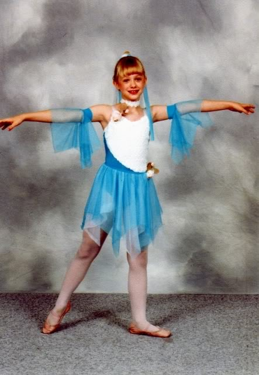
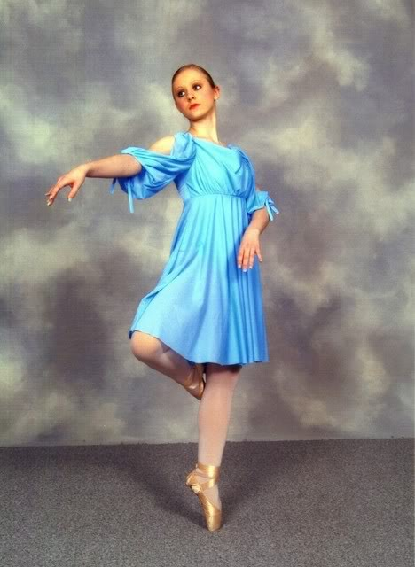

The Early Years
I started doing ballet, tap, and jazz at a dance studio that had just opened up two blocks from my house. I quickly fell in love with it and started taking more classes, like pointe, lyrical, and hip hop. I dropped all of the my other extracurricular activities I was doing at the time. I advanced through the various levels and joined "Company," which was our studio's competition team. It was a huge artistic release for me, and I found out that I really love being on stage despite my intense shyness.
I quit dance my sophomore year of high school because my studio was closing. I decided not to find another studio and instead focused on school and different extracurriculars there. Honestly, I liked being away from dance; it had become a chore and was detrimental to my health at the time. The time away was good for me.